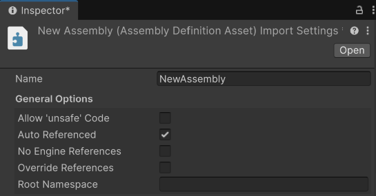
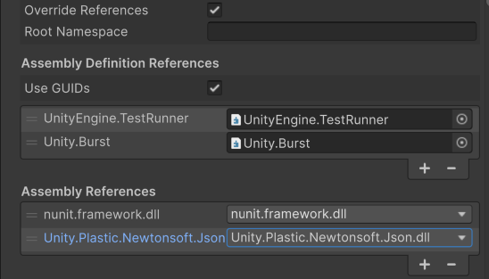
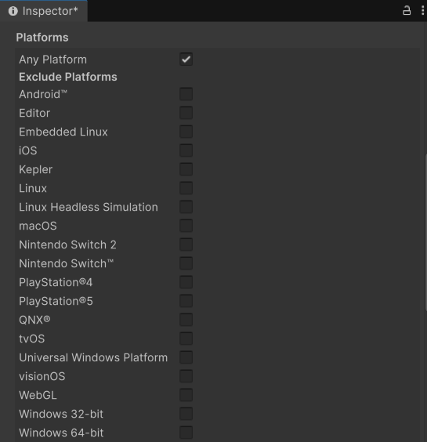
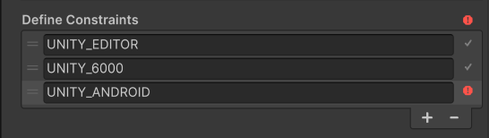
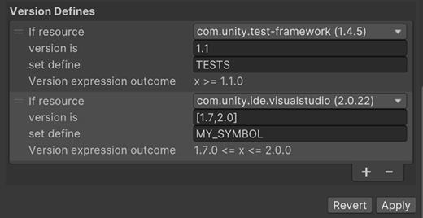

Click on an Assembly Definition Asset to set the properties for an assembly in the InspectorA Unity window that displays information about the currently selected GameObject, asset or project settings, allowing you to inspect and edit the values. More info
See in Glossary window.

| Property | Description |
|---|---|
| Name | The name for the assembly (without a file extension). Assembly names must be unique across the Project. Consider using a reverse-DNS naming style to reduce the chance of name conflicts, especially if you want to use the assembly in more than one Project. For more information on .NET requirements and recommendations for assembly naming, refer to Assembly names. Note: Unity uses the name you assign to the Assembly Definition asset as the default value of the Name field, but you can change the name as needed. However, if you reference an Assembly Definition by its name rather than its GUID, changing the name breaks the reference. |
| Property | Description |
|---|---|
| Allow ‘unsafe’ Code | Enable this option if you have used the C# unsafe keyword in a script within the assembly. When enabled, Unity passes the /unsafe option to the C# compiler when it compiles the assembly. |
| Auto Referenced | Specify whether this assembly is automatically referenced by Unity’s predefined assemblies. When disabled, Unity does not automatically reference the assembly during compilation. This has no effect on whether Unity includes the assembly in the build. |
| No Engine References | When enabled, Unity does not add references to UnityEditor or UnityEngine assemblies when it compiles the assembly. |
| Override References | Enable this option to manually specify which precompiled assemblies this assembly depends upon. When enabled, the Inspector shows the Assembly References section, which you can use to specify the references. A precompiled assembly is a library compiled outside your project. By default, assemblies you define in your project reference all the precompiled assemblies you add to the project. When you enable Override References, this assembly only references the precompiled assemblies you add under Assembly References. Note: To prevent project assemblies from automatically referencing a precompiled assembly, you can disable the precompiled assembly’s Auto Referenced option. For more information, refer to Import and configure plug-ins. |
| Root Namespace | The default namespace for scriptsA piece of code that allows you to create your own Components, trigger game events, modify Component properties over time and respond to user input in any way you like. More info See in Glossary in this assembly definition. If you use either Rider or Visual Studio as your code editor, they automatically add this namespace to any new scripts you create in this assembly definition. |
For more information, refer to Create an Assembly Definition asset.

| Property | Description |
|---|---|
| Assembly Definition References | A list of assemblies to reference from the current assembly. Click the + button to add a new reference. Click the - button to remove a reference. Unity uses these references to compile the assembly and define the dependencies between assemblies. |
| Use GUIDs | This setting controls how Unity serializes references to other Assembly Definition assets. When you enable this property, Unity saves the reference as the asset’s GUID, instead of the Assembly Definition name. It’s good practice to use the GUID instead of the name, because it means you can make changes to the name of an Assembly Definition asset without having to update other Assembly Definition files that reference it. |
For more information, refer to Create an Assembly Definition asset.
| Property | Description |
|---|---|
| Assembly References | The Assembly References section only appears when you enable the Override References property in the General Options section. Use this section to specify any references to precompiled assemblies on which this assembly depends. For more information, refer to Referencing a precompiled, plugin assembly. |

| Property | Description |
|---|---|
| Platforms | The Platforms list defines which target platforms the assembly compiles for. If you select Any Platform, then Unity compiles the assembly compiles for all platforms and excludes any individual platforms you select. If you deselect Any Platform, then Unity compiles the assembly for no platforms by default and includes any individual platforms you select. |
For more information, refer to Creating a platform-specific assembly.

| Property | Description |
|---|---|
| Define Constraints | Define constraints specify the scripting symbols that must be defined in your project for Unity to compile or reference an assembly. All the listed symbols must be defined for the assembly to compile. Constraints work like the #if preprocessor directive in C#, but on the assembly level instead of the script level.Prefix a symbol with an exclamation ( !) to negate it. For example, !ENABLE_IL2CPP specifies that the symbol ENABLE_IL2CPP must not be defined for the assembly to compile. Use the || (OR) operator to specify that at least one of the constraints must be present in order for the constraints to be satisfied. For example, UNITY_IOS || UNITY_EDITOR_OSX compiles the assembly when either UNITY_IOS or UNITY_EDITOR_OSX is defined. If any constraint is currently not met, Unity marks the individual constraint and the Define Constraints section with red information icons. You can use any of Unity’s built-in scripting symbols and any custom scripting symbols you’ve defined. For more information, refer to Platform dependent compilation. Note: The Define Constraints apply to the currently active platform in your project Build ProfilesA set of customizable configuration settings to use when creating a build for your target platform. More info See in Glossary. To define a symbol for multiple platforms, you must switch to each platform and modify the Define Constraints field individually. |
For more information, refer to Conditionally including an assembly.

Specify which symbols to define according to the versions of the packages and modules in a project.
| Property | Description |
|---|---|
| If resource | A package or module. |
| version is | An expression defining a version or range of versions. |
| set define | The symbol to define when an applicable version of the resource is also present in this project. |
| Version expression outcome | The expression evaluated as a logical statement, where x is the version checked. If the expression outcome displays Invalid then the expression is malformed. |
For more information on defining these properties and the correct syntax for version expressions, refer to Defining symbols based on project packages.